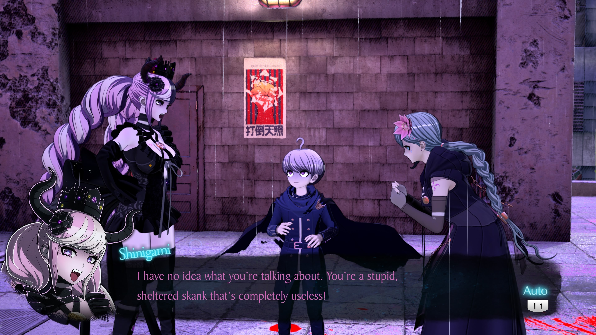
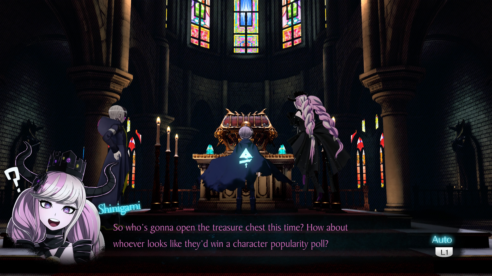
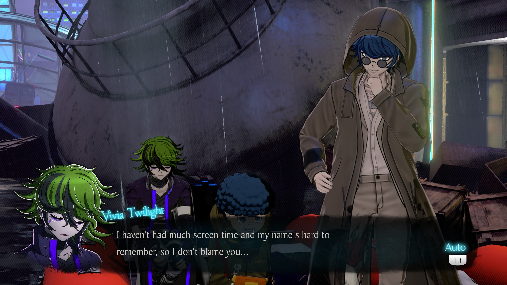
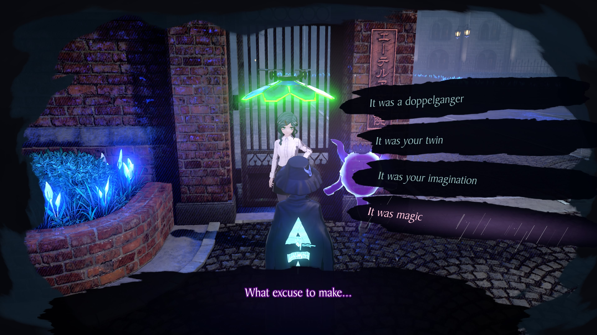
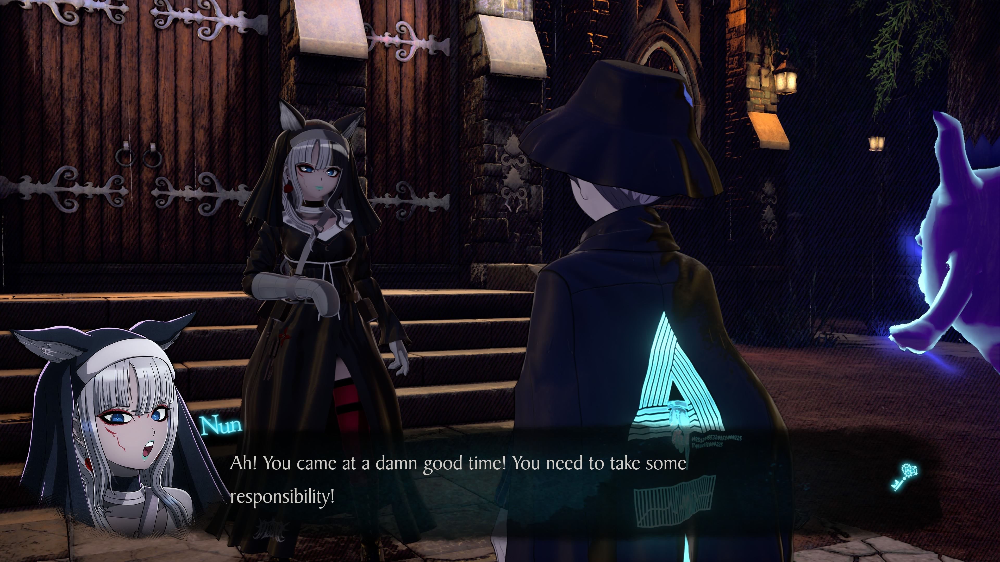
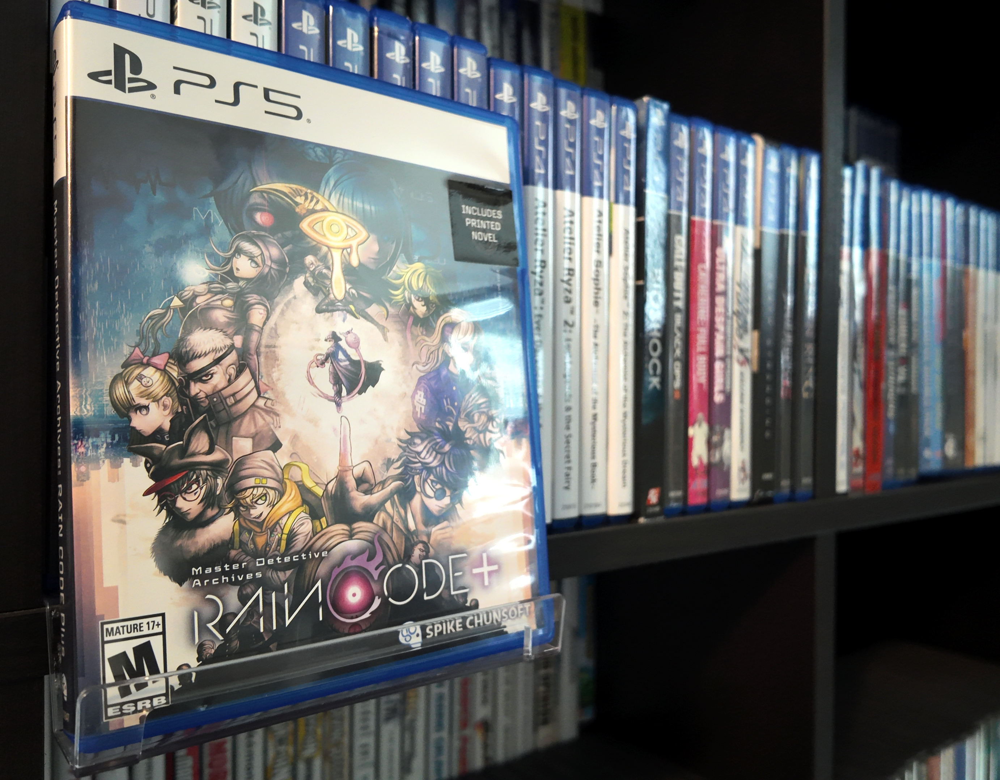

1game1week - Week 15 (4/17/26) - Master Detective Archives: RAIN CODE Plus
Hey all! It's Week 15! I don't have a whole lot to update here. I went to Jury Duty on Tuesday, and it was incredibly boring. Woke up really early, went to sit for two hours, was told to go line up with 60 something other people, then "oh, it's lunchtime, be back here or we're arresting you lol", only to go back and wait for two hours. Finally, after being taken into the actual courtroom, listen to vague details about the case... only to wait two more hours while the lawyers decided on the jurors. Thankfully, they didn't pick me. I went back home to just sit there and feel like the government found it funny to waste my day just to give me $20. Anyways...New games from 4/9 -> 4/15: - さよならを教えて ~comment te dire adieu~ (Sayonara wo Oshiete ~comment te dire adieu~) (PC)
As of 4/15, my yearly backlog was at -20 (lower is better, -6 since last week). And onto 1g1w. A game is considered "beaten" if I've accomplished the main objective of the game, regardless of how many routes / endings I've achieved. However, it's preferable to get all endings if possible! GAME(S): Master Detective Archives: RAIN CODE Plus PLATFORM: PS5 GENRE: Adventure Visual Novel STARTED ON: 3/29 BEATEN ON: 4/10 TOTAL PLAYTIME: 42 hours 51 minutes (tracked via PS-Timetracker) As a preamble and before some of my friends block me and report me and cancel me online, I want to make it known I did enjoy Raincode. With that out of the way, I think Raincode isn't really a perfect game. It has some great highs- mostly the writing, but its lows drag it down so much that it occasionally felt like a drag. Raincode is a spiritual successor to the Danganronpa series, written by Kazutaka Kodaka. Given Danganronpa had little place to go after V3, it seems more apt to go this route. Please be forewarned that my thoughts regarding Raincode are slightly influenced by and will draw direct comparisons to the Danganronpa series. It starts with an amnesiac protagonist, Yuma Kokohead, being thrust into the role of a detective going to an isolated city called Kanai Ward to uncover "Kanai Ward's Greatest Secret". As a random note, Yuma looks exactly what anyone would expect Naegi and Kirigiri's child would look like. For a spiritual successor it feels apt, but... ah, well, I'll get into it later. Given no guidance on where to actually get started on that, Yuma ends up running into quite a lot of trouble trying to fill in his shoes as a trainee detective. All of it, however, inches him closer to the truth. Yuma has the secret ability of being able to use the powers of a Shinigami, aptly named Shinigami (more on her later) to enter Mystery Labyrinths. These are dungeon-like sections of the game that are (meta)physical manifestations of the case Yuma is trying to solve, and functionally serve as a "replacement" for Danganronpa's class trials. It features a cast with various different colorful personalities that breathe different kinds of life into the game- typically, you're getting a new character companion per chapter (more on that later) and get to explore different parts of Kanai Ward. I think, for the most part, Raincode is mostly hindered... by its unwillingness to "full send". My friend Billy put it best. "It is a bunch of half-baked ideas with immaculate vibes." Personally, I think I would say: "It is a bunch of half-baked ideas with immaculate vibes and a constant navigator character that will turn off 50% of the game's audience from playing". This is where I talk about Shinigami: to put it simply, she is a supporting protagonist that is constantly at the protagonist's, Yuma's, side. From my point of view, she is a charming little chatterbox that provides a good amount of comedic relief to a slightly dark story. I can see it from the other side of the chessboard, however. Shinigami is a character with a teasing, slightly abusive personality with sometimes annoying humor in, again, a dark story. She will constantly talk poorly about other female characters in the game (calling them skanks, bitches, even calling one "uggo Flatty McFlat-Chest"). She will also occasionally disparage Yuma. It feels mean spirited. Sometimes, it can very easily ruin the "serious" investigative vibe or make things feel small. As I mentioned, this is a constant character. You are stuck with her, and her personality, for the entire runtime of the game. There is rarely a point in the game where she quiets down, or tries to empathize with Yuma or the investigation. Her dialogue is nothing but constantly making light of the events of the game and insult its characters. It felt tough to keep myself engaged when the game makes fun of itself for its entire runtime. It felt like having someone over your shoulder constantly making fun of you for playing games, or ridiculing what you're doing. Another series, like Somnium Files- which also did make fun of itself a bit- mostly knew when to stop and take itself seriously. Aiba and Tama, as characters, are the same way: teasing, and slightly abusive. Their respective dynamics with Date (or Mizuki) and Ryuki are, for the most part, a constant source of some comedic relief or color commentary. But Aiba and Tama are keenly aware of when the situation calls for them to not be that way. Put against those two, Shinigami doesn't feel teasing or slightly abusive, she feels mean-spirited. Personally, I'd be interested in wondering what the game would be like without Shinigami, since she's the main "comedic relief". Would it be more serious? Would it be too serious? There is a balance there somewhere. Shinigami isn't a bad character, she's just there all the time. It can get grating. So then... is it simply that Kodaka was "too afraid" of making the story too much without it having a lighter tone, via Shinigami? Did he think it wasn't worth it to "full send"?


While talking about the characters, I'm going to touch on some of the supporting cast. Alongside Yuma, there are five separate detectives: Halara, Vivia, Desuhiko, Fubuki, and Yakou. With the exception of Yakou, each of them are "Master Detectives"- a title which is granted to people with superhuman abilities such as crime scene reconstruction or being able to construct perfect disguises. Through the game, you'll be spending a chapter or so being assisted by a particular detective, giving them the most screen time for that chapter. This can help the player feel a little more connected to the characters. But... not too connected. The game, in my opinion, fails to legitimately make me feel attached to these characters, something that is incredibly strange in a Kodaka game of all things- even more so due to its hugely reduced cast compared to Danganronpa or Hundred Line. Trying my best not to spoil, one of the chapters is especially tough with one of the characters Yuma was close to. As a player, though... I just couldn't get myself to care all too much. This character had so incredibly little screen time that it just didn't hit me the same way. Think about it this way: let's say you're back in 1997 and playing Final Fantasy VII on release. You get quite a ways through. You get to meet Aerith, you go to the church, through the Sector 5 slums, the whole Wall Market sequence... and then she just dies during the Sector 7 plate dropping sequence. Like the Biggs/Jessie/Wedge, actually. Cloud has a huge crash out, and for the rest of the game, he just constantly thinks "I couldn't save Aerith..." ...so like in the original game, just a lot earlier. The problem here is that this particular event happens 35 hours in. Nearing the end of the game. Sure, maybe I wouldn't be able to get close enough to Aerith to care all that much if she died by the time the plate dropped, but when I'm 35 hours in, I would think I'd be invested in the characters. The game simply didn't give this character the screen time they needed to make it impactful. Aside from Yuma, characters are simply not developed. There's no character arc, no personal growth for any of the characters except for one or two. It makes them all a lot less impactful. This is part of a larger problem: the game has little downtime / pacing problems. When you finish a chapter, you are almost immediately thrust into the next web of problems. I'm just going to compare it to Danganronpa. Between Class Trials, there is a small amount of plot development as well as- very important- Free Time. During this, you are able to freely roam Hope's Peak/Jabberwock/Ultimate Academy and interact with the cast. You're able to learn about them- their hopes, their dreams, their hobbies, background, and why they set themselves on the path they're going down. Obviously, that's the point. The game wants you to be attached to these characters so that you'll be upset when they die. The "despair" feeling is by design, and it was Kodaka's strength. This goes especially in Danganronpa for the blackened, or the culprit of the case. In Raincode, you barely even get to know them. In Chapter 1, the suspects don't even have names. You interact with them in the real world exactly one time. This is a common trend. Imagine if with Danganronpa, the downtime was taken away. You go from the end of Chapter 2 to the body discovery in Chapter 3. It just didn't hit that well here. The character had so little screen time that it was pitiable. What's most annoying is that the substance is there. The game does let you know there is more than meets the eye. It just chooses never to tell you, and to never give this character even a bit of screen time. When first booting up the game, there are 5 DLC stories available. However, they are recommended to be viewed after finishing the game. These are short 30-40 minute oneshots that center around one of the game's Master Detectives (and Yakou). While they aren't perfect, they're definitely the content I was looking for when I spoke of needing to be given a reason to care about these characters. In these stories, set in the same world and looking to take place shortly before Yuma arrives in Kanai Ward, the supporting cast in the game is the main attraction and it does a decent job of showing off some of their own thoughts and resolve. The problem is this: these should not have been DLC stories. They should have been side stories interwoven into the game, though this is an incredibly tough ask because the detectives use their abilities here, and it would potentially take away from the reveal in the main game. If it's pulled off, though, it solves three problems at once: you get a short break from Shinigami, you get the player invested in these characters outside of their respective chapter, and you get a small amount of downtime from the main mystery. They could even be drip-fed as small side stories- which already exist in the game, but are mostly used as a plot device to show you a little more of Kanai Ward's residents and their struggles. The problem with those, I think, is that they're just way too short, disconnected, and not really engaging (eg. go here, talk to this person, talk to this other person, you're done).
Let's shift a little and talk about the "meat and potatoes", the Mystery Labyrinths. Like I mentioned, these are functionally the Class Trial sections from Danganronpa with small twists. Non-Stop Debates are now called Reasoning Death Matches, and it's the same formula. Your opponent will make a few statements, and one will have a statement you can disprove with what is functionally a Truth Bullet, but is now referred to as a Solution Key. It's a little more... interactive, I suppose, in that you are to dodge the words that slowly make their way towards Yuma. You also have Shinigami Puzzle, which is this game's equivalent of Danganronpa's Hangman's Gambit. Shinigami gets in a bikini and then into a barrel. You throw swords at the barrel and hit letters, in order, to slowly spell a word that answers a question. There's also Decision Denouement, which is the exact same as Closing Argument. My problem with Mystery Labyrinths is the following: For one, I think that having all these mechanics that are near drop-ins from Danganronpa makes the game lack its own identity outside of just being a Danganronpa spiritual successor. Despite it being six years removed from when V3 released, Raincode refuses to let go of it. On a small tangent, I thought the Mystery Labyrinths lacked identities between themselves, too. The exteriors all look the same, parts of the interior are shared... some visual elements just don't "fit" the overall point that the Labyrinth itself is a (meta)physical representation of the mystery. It just felt like I was going to the same place, different rooms. This comparison has to come out at some point even though I'm not a fan of doing this, but try linking it to Palaces in Persona 5. Pretend every single palace- regardless of whose it was- looked like Kamoshida's Castle, with just a few rooms that fit the actual characters. Second is once again, pacing. This is one of the game's struggles that is most obvious in Mystery Labyrinths. After one of the aforementioned Danganronpa-like sections, typically Non-Stop Debates, you get a small hallway section. I'm just going to describe it, because it's easier that way. You walk forward in a generic-looking (well, by that I mean it rarely changes between chapters/investigations) hallway while the characters talk. You do not progress. The hallway is a treadmill. You cannot progress until the characters are done talking. You do not get text boxes to advance. You do not get interesting angles, or expressions. You get the back of the characters as you functionally move in place while you wait. When they're finally done talking, you have to walk until the hallway changes to show you a door. You walk through the door, and then go into another Danganronpa-like section. This is a common occurence in the game that will have you do nothing but hold the stick forwards for minutes at a time. Sometimes, depending on where you are, you can wait upwards of 15 or so seconds just holding forward, even after the dialogue is over. That is the general structure of the Mystery Labyrinths. You go through a hallway, go into a Reasoning Death Match, go back into a hallway, go into a Reasoning Death Match, go into a Shinigami Puzzle, and go to another hallway. Here's my theory: the game just wants to be a visual novel, mostly like Danganronpa. But it just really wanted to incorporate 3D environments to try to trick people who would conventionally think a game like Danganronpa is lame into playing it. It feels slightly tacked on without much forethought. Third: for the most part, the mysteries are too easy. I mean it. I don't think I'm some incredible detective and everyone in the game is just stupid. I think the game was designed so that by the end of the investigation, the player is already supposed to know who the culprit is or how the crime took place except for when the game withholds information from the player to build suspense. This game, for a mystery detective game, is way too predictable. Even the patented Kodaka twist at the end is predictable, which is such a shame because they have always been incredible. What's worse- even when something isn't obvious, the game gets just shy of spelling it out for you (sometimes literally with Shinigami Puzzle). Even then: something that took me looking at the square-shaped block in my hand, and then looking at the square hole in my baby toy (figuring out who the killer is) took the cast typically about 40 minutes per Labyrinth to figure out. They do it in a very logical way, after all. The Reasoning Death Match, the Shinigami Puzzle... all of it is the characters inching closer to the truth of the case. If I were to compare it to the baby toy example from earlier, I'd say that the characters feel the toy in their hands. Then, they move their head slowly to see the toy. They think "hmm... toy...". They nibble on it a little bit. Then, they look in front of them and see the square hole. They stick their finger in. They look to the toy. Then the hole. Then the toy. Then Shinigami says something really inappropriate. Then it hits them... it goes in the square hole! To recap, the game does very little to distinguish itself from Class Trials. While it's not necessarily bad to stick to something familiar, it is bad to be overly reliant on it. The pacing is annoying, and the environment does not look pretty enough to justify having long stretches of walking nowhere. Finally, the cast can't seem to put two and two together before putting one and one together twice. I don't have anywhere else to put this, but the game also pads in the runtime a little bit. This is most seen in Chapter 3, which, while still overall interesting, just doesn't fit in the overarching narrative the way everything else does. It is an incredibly nothingburger case that tried to aim to worldbuild and forgot its own purpose, because it has no lasting impact and its worldbuilding is never touched on again. I just wrote 2,750 words about what I think Raincode failed at. I'm now going to talk about what I did like about Raincode. This game is stylistically beautiful, when it tries. Kanai Ward is a beautifully-crafted cyberpunk-like city, especially the introductory area, Kamasaki District. Kanai Ward sees constant rain, and it helps set the mood for the game really well, which is accentuated even harder by Masafumi Takada's masterfully-crafted music. All this, accompanied by the neon light and colors tells you an incredible amount about Kanai Ward, and potentially the people living here. Even past Kamasaki, the entire little world the game put you in was a joy to explore, even if it was... functionally bare. You can talk to some NPCs, do some short side quests... that's about it. I think part of the charm is being able to look at Kanai Ward as if you were a tourist- just someone strolling, taking the sights.
Even if it was predictable at times, the story was phenomenal which is just what I'd expect from Kodaka. I obviously can't talk all too much about it because I still try my best to make these posts as spoiler-free as possible, so while I'd love to go into another 2000 word spiel about how much I enjoyed the story, I'll have to hold off on that. The problem with the story is simply that it's not long enough to do much with the supporting cast, and chooses to divvy up the screen time for one-on-one interactions with Yuma rather than spread it all throughout. I can understand why this wasn't done, however: if you have five or six detectives all in the same building, solving the same case, it's either going to make them look like idiots for taking so long, it's going to make them look mean by dumping it all on Yuma (the player), or it's just going to make everything too easy. Throughout Kanai Ward, there are collectibles that unlock special conversations (accessible via a menu) between Yuma and the other detectives. These are very short, one minute or two, talking about random topics. While they attempt to help bridge the gap for the player with respect to getting to know these characters, not only are they optional, not only are they not the best at really bridging the gap, they're missable as some will disappear if you do not collect them in their specific chapters. I think- bear with me, but I think: If this game was 100 hours and had a Kanai Ward that was a little livelier, it could easily be one of Kodaka's best games and have helped TooKyo gain a solid standing shortly after getting started. I truly believe that if: - The overarching mystery was drawn out a tiny bit longer, - The supporting cast had been more relatable and experienced their own growth, - The DLC side stories had been part of the main game, and not their own thing, - The city had more to do other than look at it, - Mystery Labyrinths were completely overhauled to have more of Raincode's DNA rather than Danganronpa's, as well as give them thematic makeovers, - Shinigami was toned down a bit, - Nun got more screen time, It would be a fantastic, fantastic game. Overall, Raincode feels as if it's stuck between wanting to be Danganronpa and wanting to be so much more than Danganronpa. Its overall problem is an identity crisis.
But I think that all of this was something the team very likely realized on their own. I'm happy that they were able to try something new, since that was TooKyo's purpose. They learned from their mistakes and made the masterpiece known as Hundred Line. So it's okay. After all, it seems like Raincode was a stepping stone.
Thanks for reading! If you need to contact me for any reason, please feel free to email me at aru@hoshikawa-aru.com.